Elastix#
Interface to Elastix for alignment of volumetric data.
The elastix documentation can be found here.
In essence, a transformation 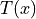 is sought so that for a fixed image 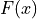 and a moving image 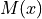:
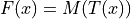
Once the map  is estimated via elastix, transformix maps an image
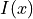 from the moving image frame to the fixed image frame, i.e.:
is estimated via elastix, transformix maps an image
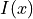 from the moving image frame to the fixed image frame, i.e.:
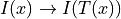
To register an image onto a reference image, the fixed image is typically
chosen to be the image to be registered, while the moving image is the
reference image. In this way a position  in the data is mapped to the corresponding
reference position via transformix as:
in the data is mapped to the corresponding
reference position via transformix as:
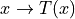
Summary#
elastix finds a transformation 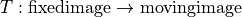
the fixed image is typically the image to be registered
the moving image is typically the reference image
the result folder may contain an image (mhd file) that is 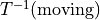, i.e. has the size of the fixed image
transformix applied to data gives 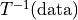 !
transformix applied to points gives 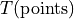 !
point arrays are assumed to be in (x,y,z) coordinates consistent with (x,y,z) array representation of images in ClearMap
In terms of atlas alignment this reads as
Atlas alignment#
elastix finds a transformation 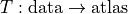
the result folder may contain an image (mhd file) that is 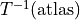, i.e. is the atlas transformed to the data.
transformix applied to the atlas gives , i.e. the atlas mapped onto the data !
transformix applied to points gives , i.e. the points in the atlas reference frame !
Main routines are: align(), transform().
- class ElastixTransformation(transform_directory=None, transform_parameter_file=None, inverse=False)[source]#
Bases:
TransformationBaseElastix Transformation
Note
The transformation represented is
as estimated by elastix.
For data transformix applies 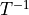 and for points - ttype = 'Elastix'#
- align(fixed_image, moving_image, affine_parameter_file, bspline_parameter_file=None, result_directory=None, processes=None, workspace=None, moving_landmarks_path=None, fixed_landmarks_path=None)[source]#
Align images using elastix, estimates a transformation 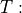 fixed image
 moving image.
moving image.Arguments
- fixed_imagestr
Image source of the fixed image (typically the reference image).
- moving_imagestr
Image source of the moving image (typically the image to be registered).
- affine_parameter_filestr or None
Elastix parameter file for the primary affine transformation.
- bspline_parameter_filestr or None
Elastix parameter file for the secondary non-linear transformation.
- result_directorystr or None
Elastic result directory.
- processesint or None
Number of threads to use.
- workspaceWorkspace
The workspace passed to the function to cath the executor to cancel the execution of the computation
- moving_landmarks_pathstr
Path to the moving landmarks file.
- fixed_landmarks_pathstr
Path to the fixed landmarks file.
Returns
- result_directorystr
Path to elastix result directory.
- check_elastix_initialized()[source]#
Checks if elastix is initialized
Returns
- initializedbool
True if elastix paths are set.
- deformation_distance(deformation_field, sink=None, scale=None)[source]#
Compute the distance field from a deformation vector field.
Arguments
- deformation_fieldstr or array
Source of the deformation field determined by
deformation_field().- sinkstr or None
Image sink to save the deformation field to.
- scaletuple or None
Scale factor for each dimension, if None = (1,1,1).
Returns
- deformation_distanncearray or st
Array or file name of the deformation distance data.
- deformation_field(sink='transformix', transform_parameter_file=None, transform_directory=None, result_directory=None)[source]#
Create the deformation field T(x) - x.
Arguments
- sinkstr or None
Image sink to save the transformation field; if ‘transformix’ return the default name of the data file generated by transformix.
- transform_parameter_filestr or None
Parameter file for the primary transformation, if None, the file is determined from the transform_directory.
- transform_directorystr or None
Result directory of elastix alignment, if None the transform_parameter_file has to be given.
- result_directorystr or None
The directory for the transformix results.
Returns
- deformation_fieldarray or str
Array or file name of the deformation field data.
Note
The map determined by elastix is 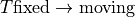.
- initialize_elastix(path=None)[source]#
Initialize all paths and binaries of elastix
Arguments
path (str or None): path to elastix root directory, if None
ClearMap.Settings.elastix_pathis used.
- inverse_transform(fixed_image, affine_parameter_file, bspline_parameter_file=None, transform_parameter_file=None, transform_directory=None, result_directory=None, processes=None)[source]#
Estimate inverse transformation 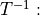 moving image
fixed image.Arguments
- fixed_imagestr
Image source of the fixed image (typically the reference image)
- affine_parameter_filestr
The parameter file for the original affine transformation.
- bspline_parameter_filestr
The parameter file for the original b-spline transformation.
- transform_directorystr or None
Elastic result directory of the original transform.
- transform_parameter_filestr or None
Elastic transformation parameter file of the original transform.
- result_directorystr or None
Elastic result directory of the inverse transform.
- processesint or None
Number of processes to use.
Returns
- result_directorystr
Path to elastix result directory.
- print_settings()[source]#
Prints the current elastix configuration.
See also
elastix_binary,elastix_lib,transformix_binary,initialized
- read_points(filename, indices=False, binary=True)[source]#
Parses the output points from the output file of transformix
Arguments
- filenamestr
File name of the transformix output file.
- indicesbool
If True return pixel indices otherwise float coordinates.
Returns
- pointsarray
The point coordinates.
- rescale_size_and_spacing(size, spacing, scale)[source]#
Rescales the size and spacing
Arguments
- sizetuple
The image size.
- spacingtuple
The image spacing.
- scaletuple, number
The scale factor.
Returns
- sizetuple
The scaled image size.
- spacingtuple
The scaled image spacing.
- result_data_file(result_directory)[source]#
Returns the mhd result file in a result directory.
Arguments
- result_directorystr
Path to elastix result directory.
Returns
- result_filestr
The mhd file in the result directory.
- set_elastix_library_path(elastix_lib_path=None)[source]#
Add elastix library path to the LD_LIBRARY_PATH variable in linux.
Arguments
elastix_lib_path : str or None Path to elastix root directory. If None
ClearMap.Settings.elastix_pathis used.
- set_metric_parameter_file(parameter_file, metric)[source]#
Replaces the metric in the parameter file.
Arguments
- parameter_filestr
The parameter file name.
- metricstr
The metric to use.
Notes
Used to replace the metric when inverse transform is estimated.
- set_path_transform_files(result_directory)[source]#
Replaces relative with absolute path in the parameter files in the result directory.
Arguments
- result_directorystr
Path to directory of elastix results.
Notes
When elastix is not run in the directory of the transformation files the absolute path needs to be given in each transformation file to point to the subsequent transformation files. This is done via this routine.
- set_transform_file_size_and_spacing(transform_file, size, spacing)[source]#
Replaces size and scale in the transformation parameter file
Arguments
- transform_filestr
Transformation parameter file.
- sizetuple
The new image size.
- spacingtuple
The new image spacing.
- transform(source, sink='transformix', transform_parameter_file=None, transform_directory=None, result_directory=None)[source]#
Transform a raw data set to reference using the elastix alignment results.
Arguments
- sourcestr or array
Image source to be transformed.
- sinkstr or None
Image sink to save transformed image to. If ‘transformix’ return the default name of the data file generated by transformix.
- transform_parameter_filestr or None
Parameter file for the primary transformation. If None, the file is determined from the transform_directory.
- transform_directorystr or None
Result directory of elastix alignment. If None the transform_parameter_file has to be given.
- result_directorystr or None
The directory for the transformix results.
Returns
- transformedarray or st
Array or file name of the transformed data.
Note
If the map determined by elastix is 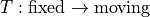, transformix on data works as .
- transform_directory_and_file(transform_parameter_file=None, transform_directory=None)[source]#
Determines transformation directory and file from either.
Arguments
- transform_parameter_filestr or None
File name of the transformation parameter file.
- transform_directorystr or None
Directory to the transformation parameter.
Returns
- transform_parameter_filestr
File name of the transformation parameter file.
- transform_directorystr
Directory to the transformation parameter.
Notes
Only one of the two arguments need to be specified.
- transform_file(result_directory)[source]#
Finds and returns the transformation parameter file.
Arguments
- result_directorystr
Path to directory of elastix results.
Returns
- filenamestr
File name of the first transformation parameter file.
Notes
In case of multiple transformation parameter files the top level file is returned.
- transform_file_size_and_spacing(transform_file)[source]#
Parse the image size and spacing from a transformation parameter file.
Arguments
- transform_filestr
File name of the transformix parameter file.
Returns
- size: tuple
The image size.
- spacingtuple
The image spacing.
- transform_points(source, sink=None, transform_parameter_file=None, transform_directory=None, indices=False, result_directory=None, temp_file=None, binary=True)[source]#
Transform coordinates math:x via elastix estimated transformation to .
Arguments
- sourcestr
Source of the points.
- sinkstr or None
Sink for transformed points.
- transform_parameter_filestr or None
Parameter file for the primary transformation. If None, the file is determined from the transform_directory.
- transform_directorystr or None
Result directory of elastix alignment. If None the transform_parameter_file has to be given.
- indicesbool
If True use points as pixel coordinates otherwise spatial coordinates.
- result_directorystr or None
Elastic result directory.
- temp_filestr or None
Optional file name for the elastix point file.
Returns
- pointsarray or st
Array or file name of transformed points.
Note
The transformation is from the fixed image coordinates to the moving image coordinates.
- write_points(filename, points, indices=False, binary=True)[source]#
Write points as elastix/transformix point file
Arguments
- filenamestr
File name of the elastix point file.
- pointsarray or str
Source of the points.
- indicesbool
Write as pixel indices or physical coordinates.
Returns
- filename: str
File name of the elastix point file.
- elastix_binary = None#
The elastix executable.
Notes
setup in
initialize_elastix()
- elastix_lib = None#
Path to the elastix library.
Notes
setup in
initialize_elastix()
- initialized = False#
Status of the elastix binaries and paths.
Notes
setup in
initialize_elastix()
- transformix_binary = None#
The transformix executable.
Notes
setup in
initialize_elastix()